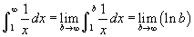
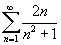
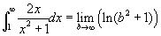
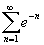
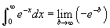

This device cannot display Java animations. The above is a substitute static image
1. Harmonic series
The initial applet shows a harmonic series. Note that the graph also shows a plot of f (x) = 1/x as a blue line. Since this is positive, decreasing and continuous, we can use the integral test. The integral can be evaluated by

Since ln
x grows without bound, the last limit does not exist, so the harmonic series diverges.
2. Divergent series
Select the second example, where the series is

From looking at the table and the graph, it isn't quite clear whether this converges or not. The blue line becomes positive and decreasing for
x > 1, so we can use the integral test:

where we used the substitution
u =
x² + 1. The limit clearly doesn't exist, so this series diverges.
3. Convergent series
Select the third example, showing the series

From the graph and table it looks like this series does converge, but we can verify this with the integral test. Since e
-x is simple to integrate and is positive, decreasing, and continuous for all
x, we can use the integral test:

Since this limit is zero, due to the minus sign in the exponent, the series converges. Note that we used a lower limit of 0 here, instead of 1, just to make the evaluation of the integral a little bit easier.
Other 'Sequences and Series' topics
(C) 2011 Copyright Math Open Reference.
All rights reserved